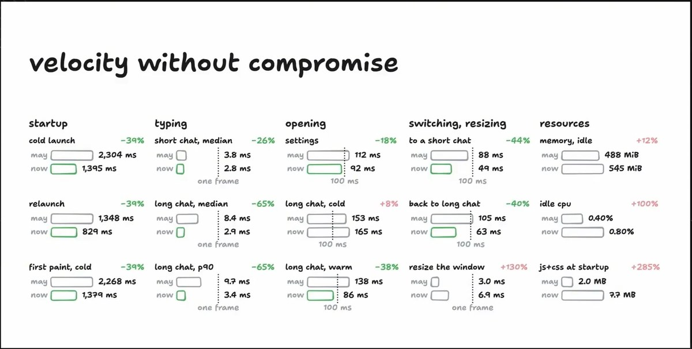

all code is slop (except mine)
月11,000 PRを「ゴミ」にしない方法

他人の書いたコードを見て「全部ゴミ（slop）だ」と思ったことはあるはず。でも、その slop は金に変えられる——。
SpaceXAI で AI チャットアプリ Grok Bot の開発を率いる Lauren Tan は、エージェントに大量のコードを書かせながら、むしろ品質を上げていく方法を語った。このページは、その講演の要点を彼女の手描きスライドとともにまとめたもの。
- エージェントのミスを直すとき、プロンプトに言葉を足すのではなく、lint・型・API設計のような決定論的なチェックに落とし込む。
- 検証（実行・スクリーンショット・形式的検証）にトークンの約7割を使い、レビューは「検証の成果物を見る仕事」にする。
- 土台が整えば、月11,000 PRでもリバート率は約0.5%。自動化は土台のあと。
1. slopを金に変える0:00〜

エージェントの登場で、誰もが「週末に大規模プロダクトを書き直すような伝説のエンジニア」並みの生産量を持てるようになった。
だからこそエンジニアの仕事は、品質を維持・改善しながら、生産性を桁違いに上げる方法を見つけることに移っていく。
彼女はこれを「ソフトウェアファクトリー」ではなく、信頼の問題だと捉える。盲目的な信頼ではない。エージェントが正しいことをすると信頼できるよう、環境そのものに投資するのだ。
その状態にたどり着くのに彼女は6か月かけた。ただし、道筋が分かればもっと短くできるという。
2. 信頼の「potetoピラミッド」2:03〜

信頼を積み上げる層は、土台から順にこうなる。
- codebase：良いAPI設計、アーキテクチャ、リファクタリング
- static analysis：lintルール、型、コンパイラ、テスト、CI
- verification：実行時検証と形式的検証
- prose：ルール文書、skills、AGENTS.md のような「文章の指示」
- human review：人間のレビュー
上の層ほどコストが高い。だから原則は、決定論的に効く下の2層を厚くし、判断がブレる prose の層は薄くすること。
エージェントの出力は入力で決まる。そしてコードベースは、最大の入力のひとつだ。
3. Dune：問題を「カテゴリーごと」消す5:00〜

Grok Bot のために作ったクライアントフレームワーク「Dune」は、デスクトップアプリ開発の教訓を、大量の制約と lint ルールとして埋め込んでいる。代表例は3つ。
- useEffect の禁止：誤用が多く、エージェントも使いこなせない。そこで製品コードでは禁止し、Dune の API 内部だけに許可した。すると問題は「起きにくくする」レベルではなく、カテゴリーごと消えた。
- ディレクトリによる分離：electron-main と electron-renderer を分け、相互の import を依存グラフ解析と lint で禁止。以前はエージェントがメインスレッドのコードをレンダラーに import し、長時間タスクやカクつきを起こしていた。
- コメントの99%禁止：コメントはすぐ陳腐化し、誰も読まず、強制力もない。しかもエージェントはコメントを、「正しいことをしない言い訳」を書く場所に使ってしまう。


命令型タイマーを多用する場当たり的な修正に、エージェントがコメントで正当化を書き添える。それがコピーされて広がり、性能が悪化した——。この実例が、コメント禁止の背景にある。
代わりに用意したのは、根本原因を直すよう促す、良いエラーメッセージを出す lint ルールだ。
4. 検証にトークンの7割を使う10:10〜

もうひとつの柱が検証だ。最も基本的なのは、エージェントにコードを自分で実行させ、開発者用デバッグツールで挙動を確認させること。
検証用のスキルには「feature map」（ユーザー視点での全機能の地図）が含まれ、共通の語彙でアプリを指し示せる。カスタムCLIも使い回し、毎回同じ手順で検証できるようにして、トークン消費を抑える。
さらに最近は、形式的検証も始めた。TLA+ で通知のような主要フローをモデル検査し、Lean で自作の仮想化ライブラリを証明して、ちらつきやジッターがないことを確かめる。プロパティベーステストも含め、すでにいくつかバグを捕まえているという。
こうしてコードレビューは、コードを読む仕事から、動画・スクリーンショット・図・形式的検証といった検証の成果物を見る仕事へと縮小した。彼女の体感では、トークンの約70%は検証に使われている。
5. 成果：速くても、壊れない13:32〜


- チームは先月 11,000件のPR を本番に出し、安定版をほぼ毎日リリース
- PRを出す人は6月の15人から10月には227人に。文脈の少ないカジュアルな寄稿者も増えた
- これだけの量でもリバート率は約0.5%で安定
- 起動（-39%）、タイピング（中央値-26%、長文-65%）、チャット切替（-44%）など、体感性能も改善した
リリースのたびにアプリ全体をファズテストし、実際のユーザーのように使ってバグを見つけ、修正PRを開いて自動マージする仕組みまで回っている。
土台が良いので、PRはデフォルトで良いものになり、深い人間レビューはほとんど要らないという。
6. 結論：自動化は、土台のあと15:11〜
「ソフトウェアファクトリー」を作って何でも自動化する前に、まずコードベースを改善すること。
内側のコーディングループが slop を出すなら、それを自動化しても slop が増えるだけだ。トークンを際限なく投げる、高くつく仕組みになる。
逆に、コードベース・静的解析・実行時と形式的検証に投資しておけば、その上にファクトリーは簡単に築ける。
リンク
元動画：All Code Is Slop (Except Mine) — Lauren Tan, SpaceXSI（YouTube / AI Engineer）
話題のきっかけ：Alejo（@ecommartinez）の X 投稿
登壇者：Lauren Tan（@poteto）／ 彼女のプラグイン集 pstack：github.com/backnotprop/pstack
このページは講演の要点を独自にまとめたもので、逐語の書き起こしではありません。スライド画像は講演動画からのキャプチャです。講演の著作権は登壇者および主催者に帰属します。